Short Course on R Tools
Deep Learning in R
Anatomy of a Neural Network
The input data and corresponding targets 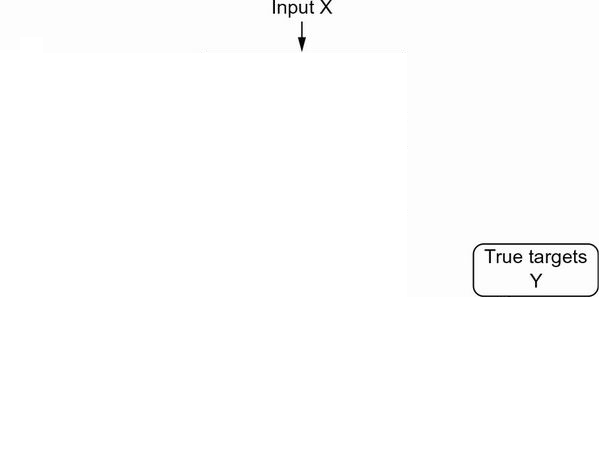
Layers, which are combined into a network (or model) 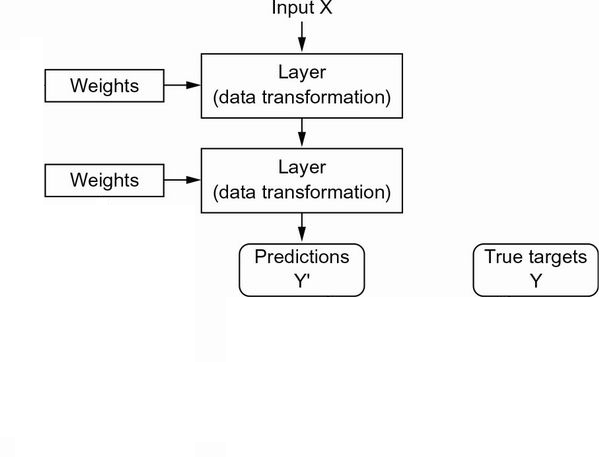
The loss function, which provides feedback for learning 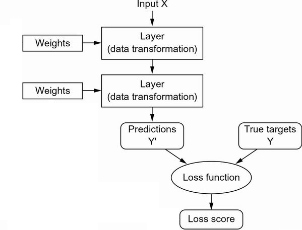
The optimizer, which determines how learning proceeds 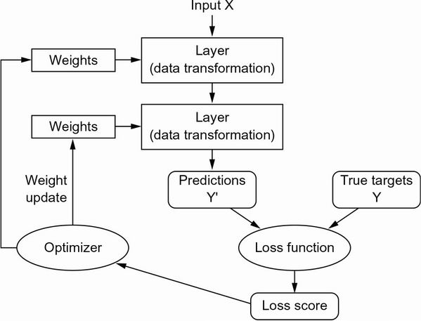

LeNet-5: a pioneering 7-level CNN
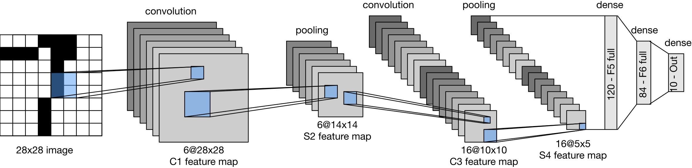
The first successful practical application of neural nets came in 1989 from Bell Labs, when Yann LeCun combined the earlier ideas of convolutional neural networks and backpropagation, and applied them to the problem of classifying handwritten digits.
The resulting network, dubbed LeNet, was used by the USPS in the 1990s to automate the reading of ZIP codes on mail envelopes.
LeNet-5 was applied by several banks to recognize hand-written numbers on checks digitized in 32x32 pixel images.

Linear Activation function
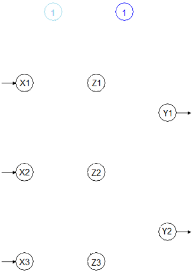

- \(Z=\color{green}{W_1}X+\color{lightblue}{b_1}\)
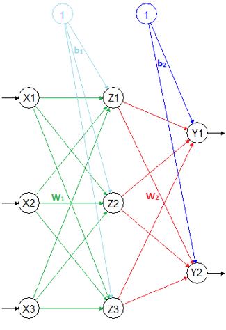
- \(Y=\color{red}{W_2}Z+\color{blue}{b_2}\)
- \(Y=\color{red}{W_2}\{\color{green}{W_1}X+\color{lightblue}{b_1}\}+\color{blue}{b_2}\)
- \(Y=\{\color{red}{W_2}\color{green}{W_1}\}X+\{\color{red}{W_2}\color{lightblue}{b_1}+\color{blue}{b_2}\}\)
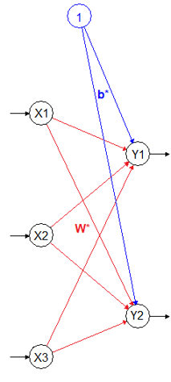
- \(Y=\color{red}{\mathbf{W}^*}X+\color{blue}{\mathbf{b}^*}\)
Hidden Layers Disappears
What is TensorFlow?
- You define the graph in R
- Graph is compiled and optimized
- Graph is executed on devices
- Nodes represent computations
- Data (tensors) flows between them

Why TensorFlow in R?
- Hardware independent
- CPU (via Eigen and BLAS)
- GPU (via CUDA and cuDNN)
- TPU (Tensor Processing Unit)
- Supports automatic differentiation
- Distributed execution and large datasets
- Very general built-in optimization algorithms (SGD, Adam) that don’t require that all data is in RAM
- It can be deployed with a low-latency C++ runtime
- R has a lot to offer as an interface language for TensorFlow
Real-world examples of data tensors
- 2D tensors
- Vector data—(samples, features)
 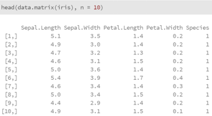
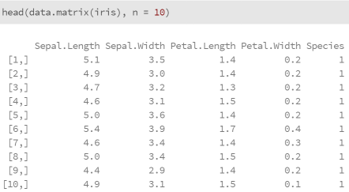
- Vector data—(samples, features)
 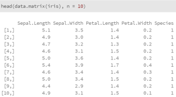
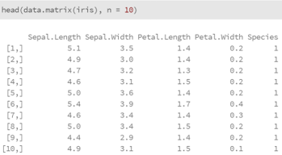- 3D tensors
- Grayscale Images—(samples, height, width)
- Time-series data or sequence data—(samples, timesteps, features)
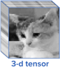 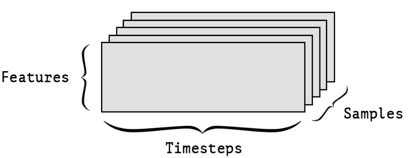
- 4D tensors
- Color Images—(samples, height, width, channels)
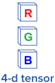 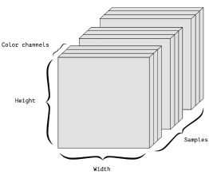
- 5D tensors
- Video—(samples, frames, height, width, channels)
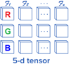
Installing Keras
- First, install the keras R package:
- To install both the core Keras library as well as the TensorFlow backend
- You need Python installed before installing TensorFlow
- Anaconda (Python distribution), a free and open-source software
- You can install TensorFlow with GPU support
- NVIDIA® drivers,
- CUDA Toolkit v9.0, and
- cuDNN v7.0
are needed: https://tensorflow.rstudio.com/tools/local_gpu.html
Developing a Deep NN with Keras
- Step 1 - Define your training data:
- input tensors and target tensors.
- Step 2 - Define a network of layers (or model)
- that maps your inputs to your targets.
- Step 3 - Configure the learning process by choosing
- a loss function,
- an optimizer,
- and some metrics to monitor.
- Step 4 - Iterate on your training data by calling the
- fit() method of your model.
3. Multilayer Perceptrons (MLPs)

Keras: Step 1 – Data preprocessing
library(keras3)
# Load MNIST (Modified National Institute of Standards and Technology) images datasets
c(c(x_train, y_train), c(x_test, y_test)) %<-% dataset_mnist()
# Flatten images and transform RGB values into [0,1] range
x_train <- array_reshape(x_train, c(nrow(x_train), 784))
x_test <- array_reshape(x_test, c(nrow(x_test), 784))
x_train <- x_train / 255
x_test <- x_test / 255
# Convert class vectors to binary class matrices
y_train <- to_categorical(y_train, 10)
y_test <- to_categorical(y_test, 10)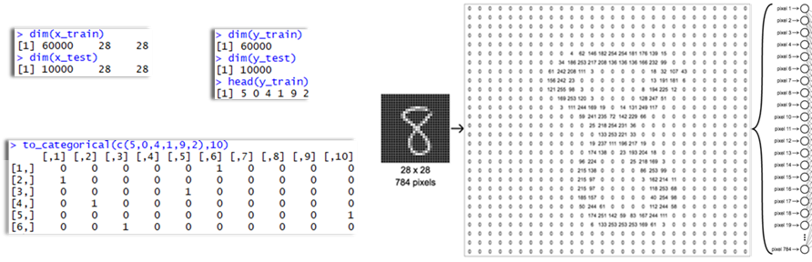
Keras: Step 2 – Model definition
model <- keras_model_sequential(input_shape = c(784))
model %>%
layer_dense(units = 256, activation = 'relu') %>%
layer_dropout(rate = 0.4) %>%
layer_dense(units = 128, activation = 'relu') %>%
layer_dropout(rate = 0.3) %>%
layer_dense(units = 10, activation = 'softmax')
summary(model)
># Model: "sequential"
># │ Layer (type) │ Output Shape │ Param # │
># ├-----------------------┼------------------┼---------┤
># │ dense_11 (Dense) │ (None, 256) │ 200,960 │
># │ dropout_3 (Dropout) │ (None, 256) │ 0 │
># │ dense_10 (Dense) │ (None, 128) │ 32,896 │
># │ dropout_2 (Dropout) │ (None, 128) │ 0 │
># │ dense_9 (Dense) │ (None, 10) │ 1,290 │
># └-----------------------┴------------------┴---------┘
># Total params: 235,146 (918.54 KB)
># Trainable params: 235,146 (918.54 KB)
># Non-trainable params: 0 (0.00 B)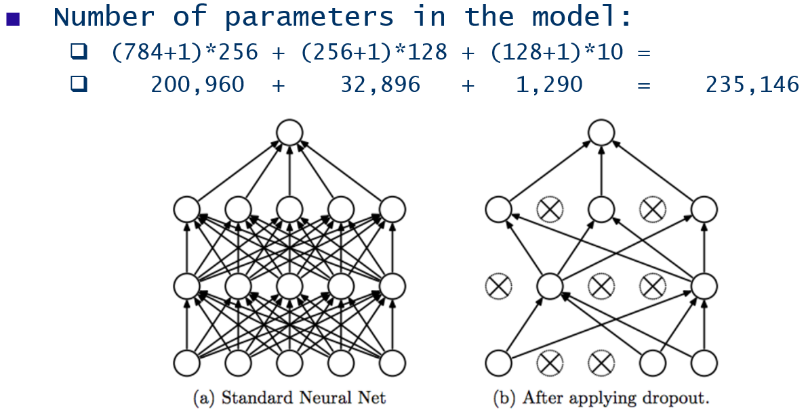

Keras: Step 3 – Compile Model
- Model compilation prepares the model for training by:
- Converting the layers into a TensorFlow graph
- Applying the specified loss function and optimizer
- Arranging for the collection of metrics during training
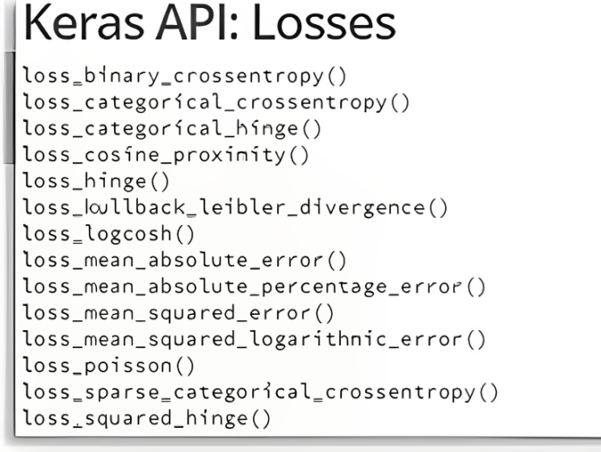
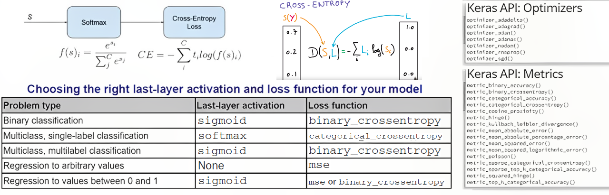
Keras: Step 4 – Model Training
- Use the
fit()to train the model for 10 epochs using batches of 128 images:- Feed 128 samples at a time to the model (batch_size = 128)
- Traverse the input dataset 10 times (epochs = 10)
- Hold out 20% of the data for validation (validation_split = 0.2)
Epoch 1/10
375/375 ━━━━━ 3s 5ms/step - accuracy: 0.7831 - loss: 0.6970 - val_accuracy: 0.9513 - val_loss: 0.1640
Epoch 2/10
375/375 ━━━━━ 1s 3ms/step - accuracy: 0.9371 - loss: 0.2123 - val_accuracy: 0.9628 - val_loss: 0.1249
Epoch 3/10
375/375 ━━━━━ 1s 3ms/step - accuracy: 0.9539 - loss: 0.1540 - val_accuracy: 0.9666 - val_loss: 0.1098
Epoch 4/10
375/375 ━━━━━ 1s 3ms/step - accuracy: 0.9612 - loss: 0.1301 - val_accuracy: 0.9743 - val_loss: 0.0865
Epoch 5/10
375/375 ━━━━━ 1s 3ms/step - accuracy: 0.9663 - loss: 0.1145 - val_accuracy: 0.9730 - val_loss: 0.0921
Epoch 6/10
375/375 ━━━━━ 1s 3ms/step - accuracy: 0.9688 - loss: 0.1020 - val_accuracy: 0.9736 - val_loss: 0.0923
Epoch 7/10
375/375 ━━━━━ 1s 3ms/step - accuracy: 0.9726 - loss: 0.0940 - val_accuracy: 0.9770 - val_loss: 0.0822
Epoch 8/10
375/375 ━━━━━ 1s 3ms/step - accuracy: 0.9742 - loss: 0.0875 - val_accuracy: 0.9770 - val_loss: 0.0815
Epoch 9/10
375/375 ━━━━━ 1s 3ms/step - accuracy: 0.9750 - loss: 0.0791 - val_accuracy: 0.9785 - val_loss: 0.0810
Epoch 10/10
375/375 ━━━━━ 1s 3ms/step - accuracy: 0.9769 - loss: 0.0744 - val_accuracy: 0.9777 - val_loss: 0.0835Keras: Evaluation and prediction
plot(history)
model %>% predict(x_test[1:100,]) %>% apply(1, which.max)-1
># 4/4 ━━━━━━━━━━━━━━━━━━━━ 0s 957us/step
># [1] 7 2 1 0 4 1 4 9 6 9 0 6 9 0 1 5 9 7
># [19] 3 4 9 6 6 5 4 0 7 4 0 1 3 1 3 4 7 2
># [37] 7 1 2 1 1 7 4 2 3 5 1 2 4 4 6 3 5 5
># [55] 6 0 4 1 9 5 7 8 9 3 7 4 6 4 3 0 7 0
># [73] 2 9 1 7 3 2 9 7 7 6 2 7 8 4 7 3 6 1
># [91] 3 6 9 3 1 4 1 7 6 9
round(model %>% predict(x_test[1:9,]),5)
># 1/1 ━━━━━━━━━━━━━━━━━━━━ 0s 16ms/step
># [,1] [,2] [,3] [,4] [,5] [,6] [,7] [,8] [,9] [,10]
># [1,] 0.00000 0.00000 0e+00 0.000 0.00000 0.00000 0.00000 1.00000 0e+00 0.00000
># [2,] 0.00000 0.00000 1e+00 0.000 0.00000 0.00000 0.00000 0.00000 0e+00 0.00000
># [3,] 0.00000 0.99983 1e-05 0.000 0.00001 0.00000 0.00000 0.00014 1e-05 0.00000
># [4,] 0.99986 0.00000 6e-05 0.000 0.00000 0.00000 0.00007 0.00000 0e+00 0.00000
># [5,] 0.00000 0.00000 0e+00 0.000 0.99995 0.00000 0.00000 0.00000 0e+00 0.00005
># [6,] 0.00000 0.99998 0e+00 0.000 0.00000 0.00000 0.00000 0.00002 0e+00 0.00000
># [7,] 0.00000 0.00000 0e+00 0.000 0.99984 0.00000 0.00000 0.00000 3e-05 0.00013
># [8,] 0.00000 0.00001 1e-05 0.002 0.00007 0.00007 0.00000 0.00044 4e-05 0.99737
># [9,] 0.00000 0.00000 0e+00 0.000 0.00000 0.30770 0.69230 0.00000 0e+00 0.00000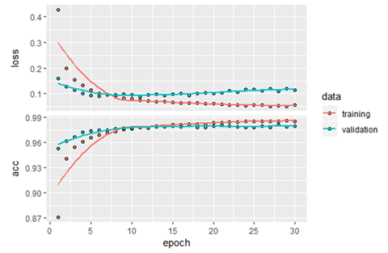
Convolutional Neural Networks (CNNs)
- Concepts: filters, pooling, feature maps
- Example:
cnn <- keras_model_sequential(input_shape=c(28,28,1)) %>%
layer_conv_2d(filters=32, kernel_size=c(3,3), activation='relu') %>%
layer_max_pooling_2d(pool_size=c(2,2)) %>%
layer_conv_2d(filters=64, kernel_size=c(3,3), activation='relu') %>%
layer_max_pooling_2d(pool_size=c(2,2)) %>%
layer_flatten() %>%
layer_dense(units=64, activation='relu') %>%
layer_dense(units=10, activation='softmax')
Recurrent Neural Networks & LSTM
- RNN basics: sequence data, time steps
- LSTM: handling long-term dependencies
- Use case: sentiment analysis, text generation

Q&A
Thank You
- Enjoy Deep Learning!